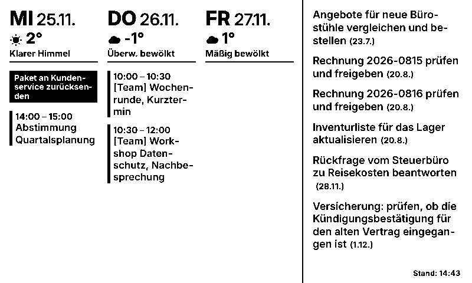

TRMNL Display einrichten
Diese Software lässt dein TRMNL-Display Termine, Aufgaben und Wetter selbst abholen. Es braucht nur ein WLAN, keinen eigenen Server und kein TRMNL-Konto. Die Installation dauert etwa zwei Minuten.

Bevor du anfängst
Leg dir diese Dinge bereit. Dann geht die Einrichtung in einem Rutsch durch und du musst nichts unterbrechen.
Für die Installation
- Ein TRMNL OG (7,5 Zoll, schwarz-weiß) mit dem Chip ESP32-C3. Die neuere Ausführung mit ESP32-C5 wird noch nicht unterstützt, die Seite erkennt das und bricht dann ab.
- Ein USB-C-Kabel, das Daten überträgt. Manche Ladekabel können nur laden, dann wird das Display nicht gefunden.
- Ein Computer mit Google Chrome oder Microsoft Edge, Mac oder Windows. Safari und Firefox können das nicht.
Für die Einrichtung danach
- WLAN-Name und Passwort. Das Display kann nur 2,4-GHz-WLAN. Die meisten Router bieten das automatisch an. Beim iPhone-Hotspot „Kompatibilität maximieren“ einschalten.
- Ein Handy mit Kamera zum Scannen des QR-Codes, oder einen Computer mit WLAN.
Dazu die Zugänge für die Dienste, die du nutzen willst. Was du nicht nutzt, lässt du weg.
Outlook-Kalender, Planner und To Do.
Du brauchst: die Anwendungs-ID und die Verzeichnis-ID von eurer IT, dazu dein Firmenkonto.
Google Kalender und Google Tasks.
Du brauchst: eine Schlüsseldatei (JSON) von eurer IT und deine E-Mail-Adresse. Die Datei lädst du am besten vom Computer aus hoch.
Aufgaben aus Todoist.
Du brauchst: deinen API-Token. Den findest du in Todoist unter Einstellungen, Integrationen, Entwickler.
Kommt von selbst.
Du brauchst: nichts. Den Ort bestimmt das Display selbst, du kannst ihn auch eintragen.
So geht's
Achtung: Die Installation löscht alles, was auf dem Display gespeichert ist. Danach richtest du es neu ein.
- Display anschließen
Display mit dem USB-C-Kabel an den Computer stecken.
- Display wecken
Kurz die Taste auf der Rückseite drücken.
Das Display schläft sonst und ist für den Computer unsichtbar. Wenn später nichts gefunden wird: noch einmal drücken.
- Installation starten
Hier klicken:Dieser Browser kann keine Geräte über USB ansprechen. Bitte diese Seite in Google Chrome oder Microsoft Edge öffnen.Die Seite muss über https geöffnet werden.
- Display auswählen
Im Fenster den Eintrag USB JTAG/serial debug unit anklicken, dann Verbinden.
Das Fenster kommt von Chrome und sieht je nach Computer etwas anders aus. Die anderen Einträge gehören zum Computer, sie spielen keine Rolle. Auf Windows steht dort oft „USB-JTAG/serial debug unit (COM3)“.
- Installieren bestätigen
Auf Install TRMNL Eigenfirmware klicken, dann auf Next und noch einmal auf Install.
Nicht „Logs & Console“ wählen. Das zeigt nur Meldungen des Displays und installiert nichts. Wer dort gelandet ist: Fenster schließen und noch einmal auf „Installieren“ klicken.
Diese Fenster sind englisch. Die Installation dauert etwa eine Minute, das Kabel bitte so lange stecken lassen. Am Ende steht „Installation complete“.
- Mit dem Handy einrichten
Den QR-Code auf dem Display mit der Handykamera scannen und den Schritten folgen.
Das Handy verbindet sich dabei mit dem Display. Die Einrichtung führt dich durch WLAN, Kalender und Aufgaben. Danach kannst du das Kabel abziehen.
Fragen
Das Display wird nicht gefunden
- Taste auf der Rückseite direkt vor dem Klick auf „Installieren“ drücken.
- Ein anderes Kabel probieren. Viele Kabel können nur laden.
- Einen anderen USB-Anschluss am Computer probieren, nicht über einen Monitor oder Hub.
Was passiert mit vorhandenen Einstellungen?
Die Installation löscht das Display vollständig, auch ein vorher eingerichtetes WLAN. Danach richtest du alles neu ein. Bereits installierte Displays brauchen diese Seite nicht: Sie holen sich neue Versionen von selbst über WLAN und behalten dabei ihre Einstellungen.
Wie kommen Updates?
Das Display sucht einmal am Tag selbst nach neuen Versionen und spielt sie über WLAN ein. Jede Version ist signiert, fremde Software nimmt es nicht an. Ein Kabel brauchst du dafür nicht mehr.
Zurück zur Original-Software von TRMNL
Die Original-Software installierst du genauso über die Webseite von TRMNL. Deine Einstellungen dieser Software gehen dabei verloren.
Welche Daten verlässt das Display?
Das Display spricht direkt mit deinem Kalender- und Aufgabendienst, mit Open-Meteo für das Wetter und für die automatische Ortsbestimmung mit BeaconDB (WLAN-Kennungen in der Nähe). Es gibt keinen Server dazwischen. Zugangsdaten bleiben auf dem Display.